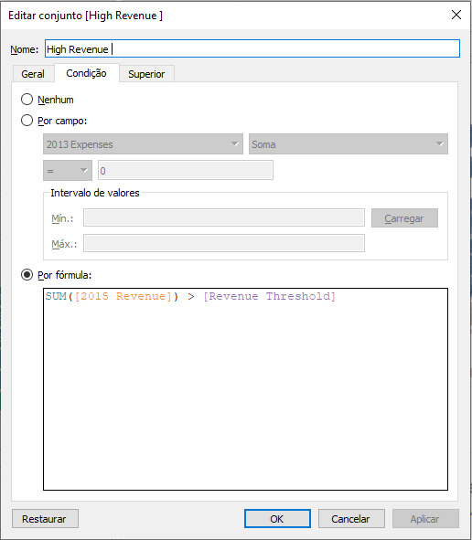

Project 1: The Startup Quadrant

Challenge
This was one of my most interesting projects! The challenge here was to provide, to a venture capital board, which of the 1000 startups given in the database were fittable for investing, regarding Revenue, Expenses and Growth parameters, set by the user. The informations and the database were provided in the Advanced Tableau Course, ministered by Kirill Eremenko on Udemy.
You can check in more detail (and even interact) with the dashboard in my Tableau Public page: The Startup Quadrant
Tools Used
Details
To build this dashboard, I had to get acquainted with Sets and Parameters in Tableau. First, I created a parameter so that the user could define how many startups they wanted to see (e.g. TOP 5, TOP 10, TOP 20, etc.) regarding Growth Percentage.
Then, It was time to link that parameter with the dataset, using Sets, so that the changes requested by the user could have been seen in our dashboard, and they could see which were the "TOP X" growing startups among those 1,000. That's how it was possible to build the interactive table seen in the bottom-right section of our dashboard.
Furthermore, we used this same Set in the main graph (the scatterplot), represented as the red dots. By doing that, the user could see not only the Growth %, but the relationship between Revenue and Expenses of those specific high growth startups. And, by using the tool tip feature in Tableau, it was possible to let only the relevant information when the user hover over the dots in the graph.
The same logic was applied to the Revenue and Expenses parameters, as you can see in this example with the High Revenue Set, related to the "Revenue Threshold" parameter

Then, to build the Quadrant itself, it was created another Set, that worked as a Join, to connect the "High Revenue" with the "Low Expense" rules set by the user. At the end, this was applied with the Color tool in Tableau, alongside the Reference Lines on both axis, in order to guide the user to understand and visualize better the rules implemented.
It was a very interesting project to do that surely have helped me a lot in order to understand some of the key concepts of Tableau. Thanks for the reading! Feel free to check my other projects and to get in touch with me! 😄